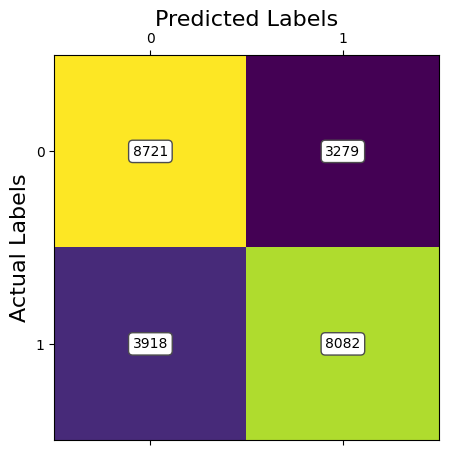
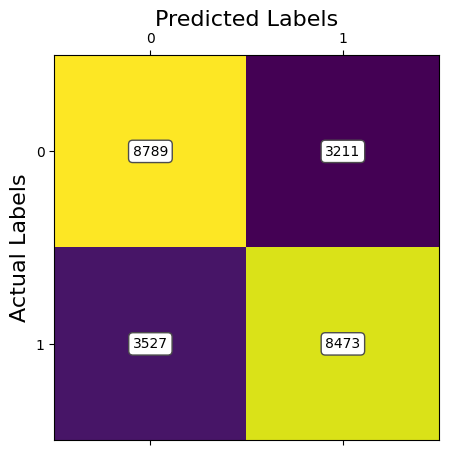
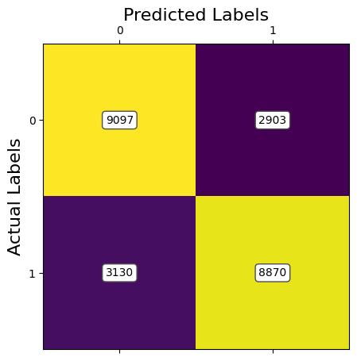
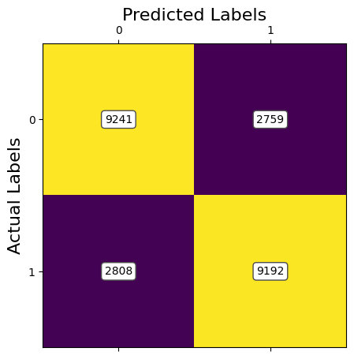
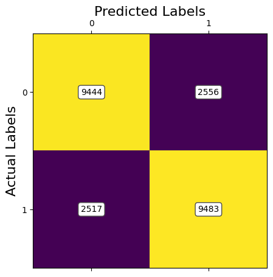
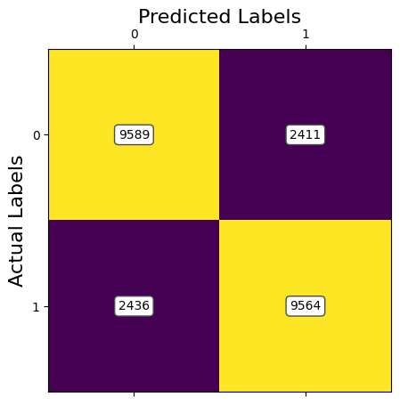

Introduction/Background
Due to the increased proficiency of AI in generating images, our team decided that an impactful topic for our project would be in detecting these synthetic images.
A paper that details a similar goal “Detection of AI-Created Images Using Convolutional Neural Networks”[1], discusses the growing concern of image generation, and the methods that they implemented in addressing it. Simply stated, the paper details the experience in creating a tool capable of “making a binary decision over an image, asking whether it is artificially or naturally created”[1]. There has been notable success in our topic prior to recent AI improvements. In 2022 similar detection models were studied, credited with achieving up to “98% accuracy in detecting Deepfakes”[2]. However, stats such as these relied heavily on alignment between the train and test sets, as using “unrelated datasets drops the performance close to 50%”[2].
Dataset: https://www.kaggle.com/datasets/birdy654/cifake-real-and-ai-generated-synthetic-imagesOur model will be trained on the “Krizhevsky & Hinton CIFAR-10” dataset, which contains 60,000 artificial images and 60,000 natural ones. This set is commonly accepted in training models to classify image generation.
Problem Definition
As AI-generated images become increasingly realistic, distinguishing them from real images has become a challenge. The potential misuse of such images to spread misinformation or perform identity theft raise ethical concerns. Since there's no universal legal requirement for AI-generated images to be labeled, it's crucial to develop automated methods for detecting and classifying them. We hope to provide a reliable tool for verification of digital media.
Methods
Results and Discussion






References
[1] F. Martin-Rodriguez, R. Garcia-Mojon, and M. Fernandez-Barciela, "Detection of AI-Created Images Using Pixel-Wise Feature Extraction and Convolutional Neural Networks," Sensors, vol. 23, no. 21, p. 8846, Nov. 2023. Available: https://pmc.ncbi.nlm.nih.gov/articles/PMC10674908/.
[2] A. Tolosana, R. Vera-Rodriguez, J. Fierrez, A. Morales, and J. Ortega-Garcia, "Deepfake Detection: A Systematic Literature Review," *IEEE Access*, vol. 9, pp. 9915–9945, 2021. Available: [https://ieeexplore.ieee.org/document/9721302](https://ieeexplore.ieee.org/document/9721302).
Award Eligibility: YES, We would like to opt in